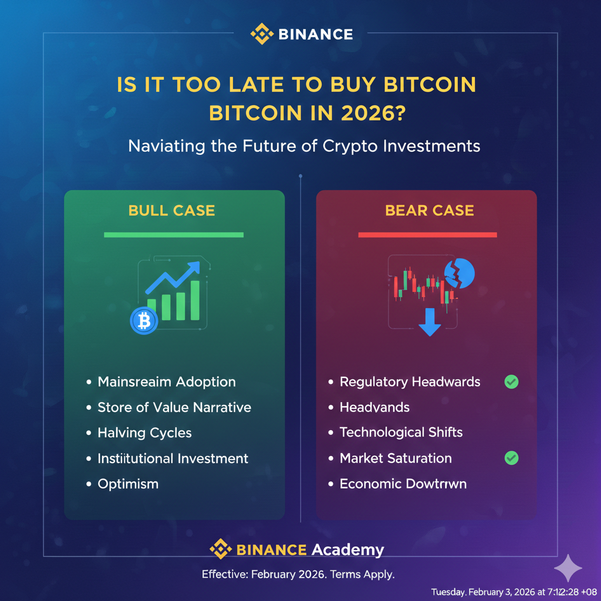

Is It Too Late to Buy Bitcoin in 2026? (The Post-Halving Reality)
It is February 2026, and the "Digital Gold" narrative is facing its toughest test yet. After hitting an all-time high of approximately $126,000 late last year, Bitcoin has entered a cooling phase, currently trading in the $75,000 to $80,000 range.
For those watching from the sidelines, the question is no longer "Will it go to the moon?" but "Did I miss the rocket entirely?" To answer this, we have to look past the 2024 halving and toward the institutional-grade future of the network.
1. Where Are We in the Cycle?
Historically, Bitcoin follows a four-year cycle triggered by the "Halving" (the most recent being April 2024). In previous cycles, the second year post-halving (which is 2026) was usually the start of a "crypto winter."
However, 2026 is behaving differently. The "Liberation Day" sell-off earlier this year—triggered by global trade shifts and tariff announcements—has already flushed out a significant amount of leverage. We are seeing a "maturation phase" where volatility is decreasing, and Bitcoin is behaving more like a high-growth tech stock than a speculative lottery ticket.
2. The 2026 Bear Market Risk
Some analysts, like those at XTB and Fidelity, argue that we are technically in a short-term bear market. Bitcoin is down roughly 35-40% from its $126k peak.
- The Support: On-chain data shows "Realized Price" (the average cost basis of all holders) sits near $55,000–$60,000. This is the "ultimate floor."
- The Resistance: Until Bitcoin breaks back above $90,000, the trend remains "sideways to down."
3. The New Institutional Floor
What makes 2026 different from 2022 or 2018? The Spot ETFs. In 2026, Bitcoin is no longer just held by "diamond hands" on Reddit. It is held by pension funds, sovereign wealth funds, and corporate treasuries (like MicroStrategy, which now holds over 430,000 BTC). This institutional "buy-and-hold" mentality has created a shallower bottom. We likely won't see the 80% crashes of the past ever again.
4. 2026-2030 Price Outlook
| Year | Market Phase | Projected Range |
|---|---|---|
| 2026 (Now) | Accumulation / Correction | $65,000 – $95,000 |
| 2027 | Early Bull / Pre-Halving Prep | $90,000 – $130,000 |
| 2028 | Halving Year | $120,000 – $180,000 |
| 2030 | Global Reserve Maturity | $250,000 – $500,000+ |
5. Should You Buy Now or Wait?
If you are looking for a "10x in a week," you are definitely too late. Bitcoin is no longer a micro-cap gem. However, if you are looking for a hedge against fiat currency debasement, 2026 offers a unique entry point.
The Verdict: Buying at $77,000 when the market is "scared" is historically a better move than buying at $120,000 when everyone is celebrating. We are currently in the re-accumulation zone.
For long-term investors (5+ years), the current dip below $80,000 represents a significant discount from the recent highs. The "too late" crowd said the same thing at $10,000 and $40,000. In 2030, $77,000 might look like the deal of the decade.